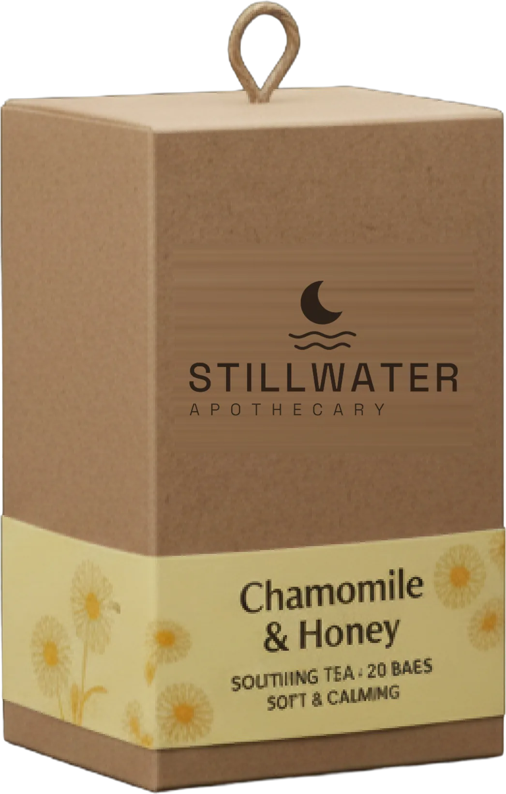
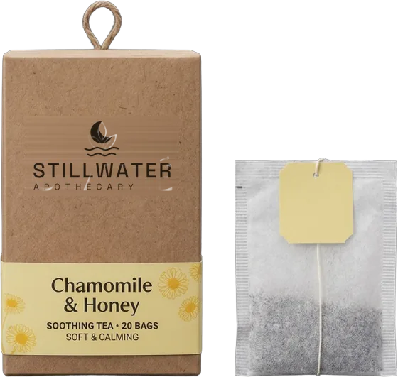
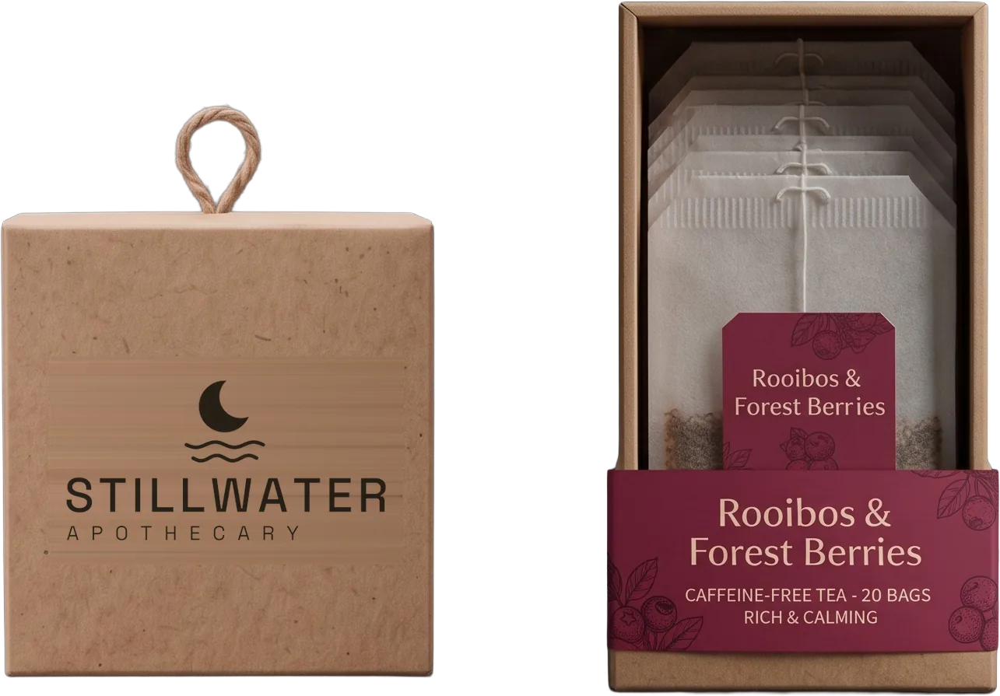
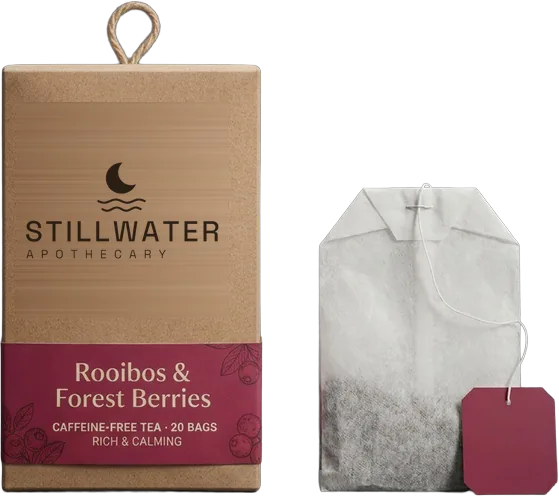
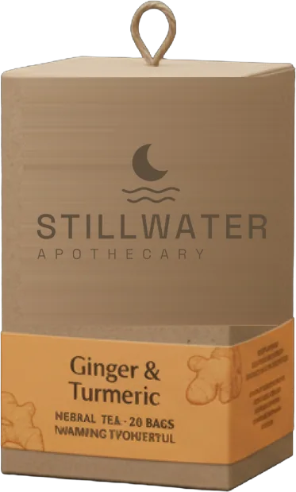
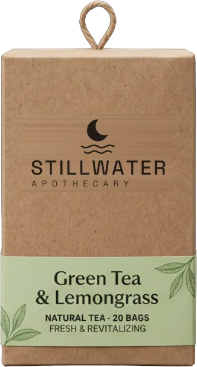
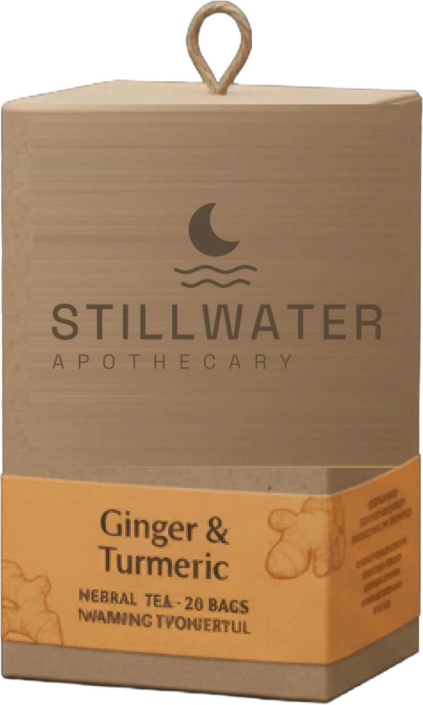

Stillwater
Als water stil wordt, zakt alles wat erin zweeft naar de bodem. Zo zien wij de avond: niet iets wat je moet oplossen, wel iets wat mag bezinken.

Kruidenthee voor je avondritueel, voor wie 's avonds rustig wil worden zonder meteen naar een pil te grijpen. Cafeïnevrij, met kamille en honing.
Je avondritueel begint om 22:00. Andere bedtijd?

Als water stil wordt, zakt alles wat erin zweeft naar de bodem. Zo zien wij de avond: niet iets wat je moet oplossen, wel iets wat mag bezinken.

Vroeger haalde je een avondkruid bij de apotheker. Iemand die de planten kende en eerlijk zei wat ze wel en niet doen. Die rol nemen we graag terug op.
We beloven geen genezing. We maken een ritueel van tien minuten, met kruiden die van oudsher bij de avond horen.
Neem je slaapmedicatie? Bespreek veranderingen altijd met je arts.
Het ritueel begint een uur voor je gaat slapen. Kies je bedtijd, dan rekenen we het voor je uit.
Je ritueel begint om 22:00. Zet het in je agenda
22:00 Grote lampen uit, kleine lampen aan. Je ogen merken dat de dag voorbij is.
22:15 Water van 90 °C over een builtje Chamomile & Honey. Laat het vijf minuten trekken. Scroll rustig mee.
Tik op de maan en adem één minuut mee.
22:25 Tien minuten niets. Geen scherm, geen to-do. Alleen de warmte van de kop in je handen.
En twee die we je 's avonds eerlijk afraden. Elk doosje telt 20 builtjes.



Onze gratis avondgids: elke avond één kleine gewoonte voor een rustiger hoofd. Je krijgt hem meteen na je inschrijving in je inbox.
Wat erin staat
Eerlijke antwoorden, lees ze voor je begint.
Nee, en dat beloven we ook niet. Thee is geen geneesmiddel. Neem je slaapmedicatie? Bespreek veranderingen altijd met je arts. Wat een kop thee wel kan: je elke avond een vast, rustig moment geven.
Chamomile & Honey en Rooibos & Forest Berries zijn cafeïnevrij. Green Tea & Lemongrass bevat wel cafeïne. Daarom raden we die 's avonds af.
Kamille wordt al eeuwenlang 's avonds gedronken. Het is mild, zacht van smaak en bevat geen cafeïne. Met een beetje honing wordt het een kop die aanvoelt als thuiskomen.
Je krijgt meteen een welkomstmail met de avondgids. Daarna hoogstens één mail per week. Uitschrijven doe je met één klik, onderaan elke mail.
We bewaren alleen je voornaam en e-mailadres, om je de mails te sturen waarvoor je je inschreef. MailerLite verwerkt ze voor ons. We verkopen of delen ze nooit. Schrijf je je uit, dan stoppen de mails meteen.
Stillwater Apothecary is nieuw. Wie zich inschrijft, hoort als eerste wanneer de blends te koop zijn.

Vanavond al beginnen? Dim om tien uur het licht. De rest van het ritueel sturen we je per mail.
Ontvang de gratis avondgids